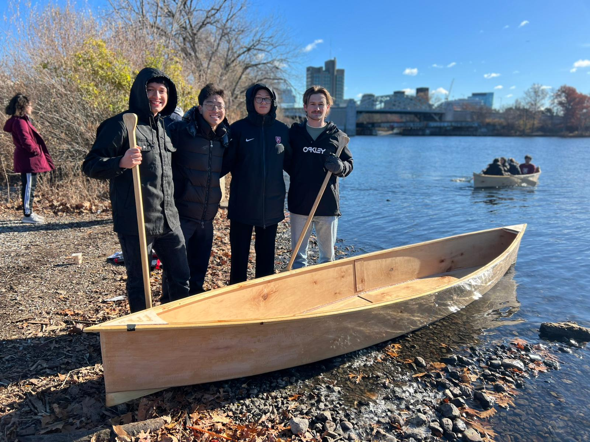

### About Us
(Left to Right)<br>

<br>Oscar: Hello! I'm Oscar Vazquez, a first year from Waukegan Illinois who intends to concentrate in mechanical engineering and secondary in environment and energy. I have a passion for completing hands-on projects which involve mixing different design processes.<br>
<br>Brayden: Hey, my name is Brayden Lee, and I am a first year from Princeton New Jersey. I am planning to concentrate in mathematics and electrical engineering, and in my free time, I love going on adventures.<br>
<br>Alix: Hello, I'm Alix Maechler, a first year from Zürich, Switzerland, who intends to concentrate in bio-medical engineering.<br>
<br>Ty: Sup, my name is Ty and I'm a 25y/o first year, and I have no idea what I'm concentrating in. I like making cool shit and chilling in my yacht on the Charles.<br>